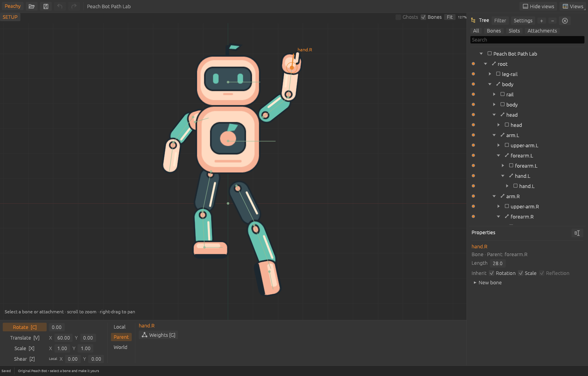
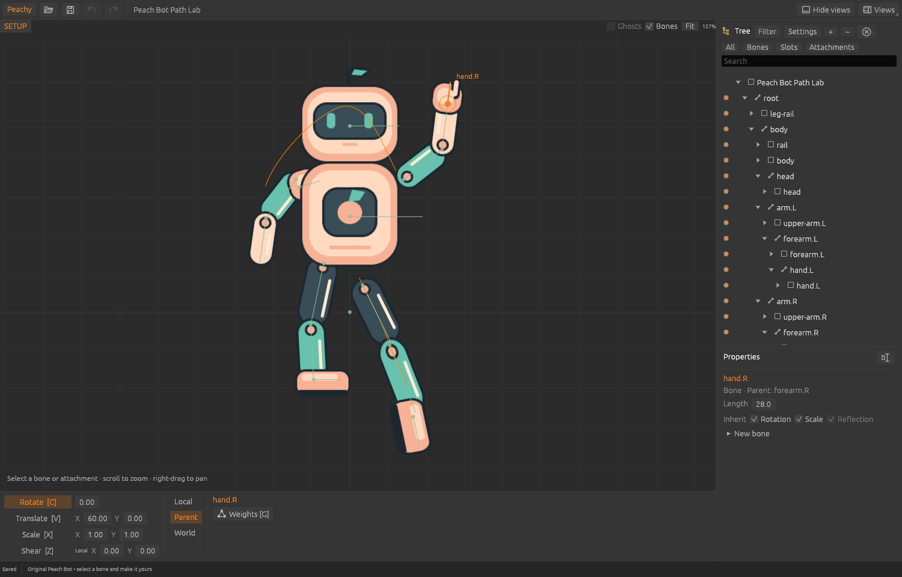
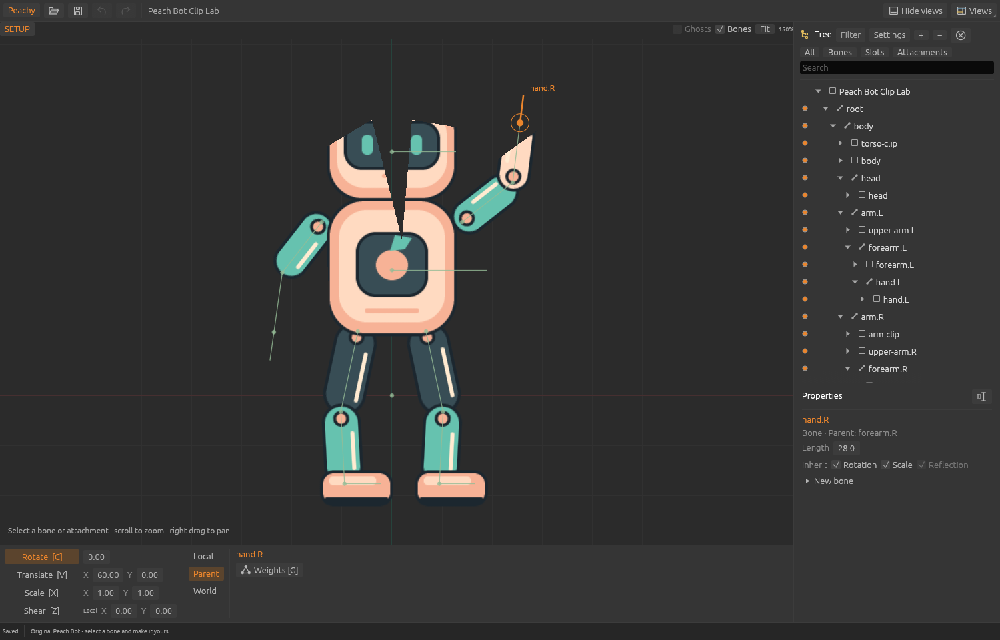
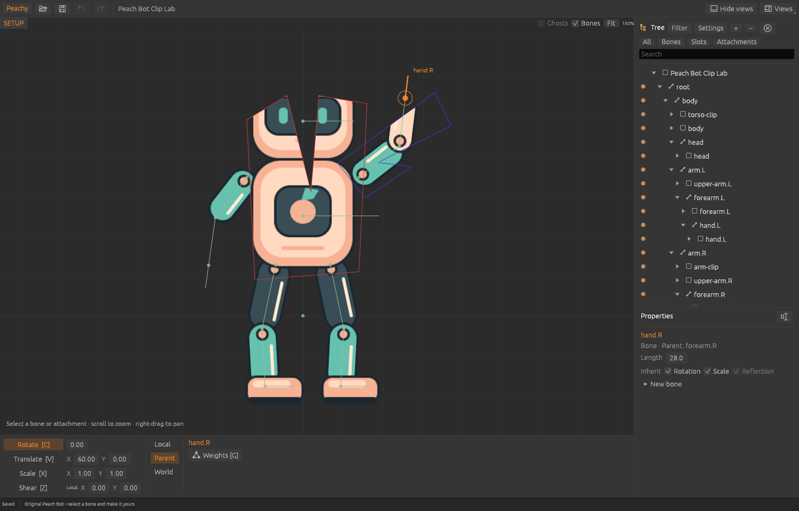
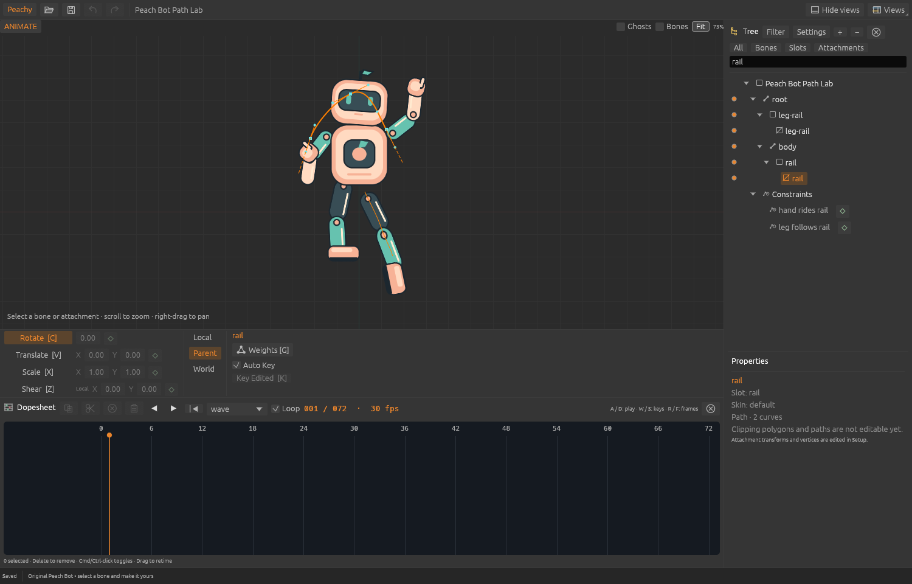
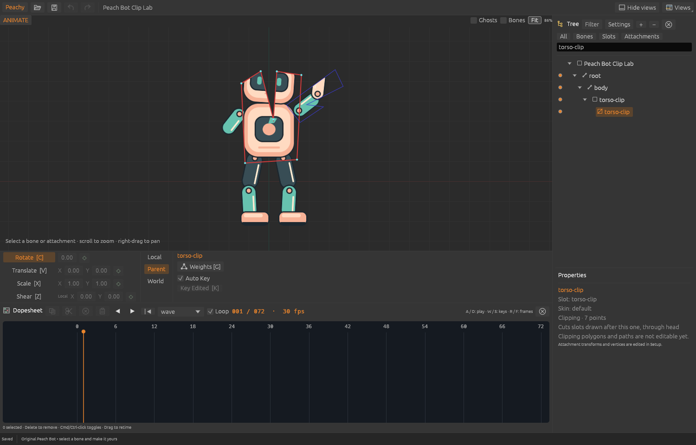

Path Lab · Setup before / after
Inspection: rendered native captures; geometry separately checked against the external runtime.




November 10, 2026 · Original Peach Bot artwork only. Select any image for its full-size PNG.
Setup comparisons use the same original documents and starting selection. Fit now includes guide vertices, so the Path Lab zoom changes. The Animate captures below separately show selected guides and native input acceptance.
Inspection: rendered native captures; geometry separately checked against the external runtime.


Inspection: rendered native captures; clipping area/coverage separately checked against the external runtime.


Inspection: actual OS mouse/keyboard input in verified task-owned foreground windows.


Both labs verify actual typed search text, outline and Tree selection, Space deselection, slot-dot hide/show and R frame stepping. Arrow input preserves the document and history.
| Level | Evidence | Limit |
|---|---|---|
| Core and shell checks | 562 Rust tests pass; one existing ignored test. Formatting, Clippy, build and architecture checks pass. | Local macOS checks; hosted CI and other platforms were not run. |
| External runtime | All 21 original labs pass; Path/Clip Lab geometry and coverage remain within their established tolerances. | Finite samples; no full compatibility or pixel-equivalence claim. |
| Installed editor observation | Actual selection in Spine 4.3.26 on original lab projects. | Color and selection cues compared; exact strokes/hover/dash length differ. |
| Pending authoring | Guides are read-only. | Vertex editing, transforms, multi-selection and translucent clipping fill remain gaps. |
Machine-readable evidence · UI parity record · Validation record